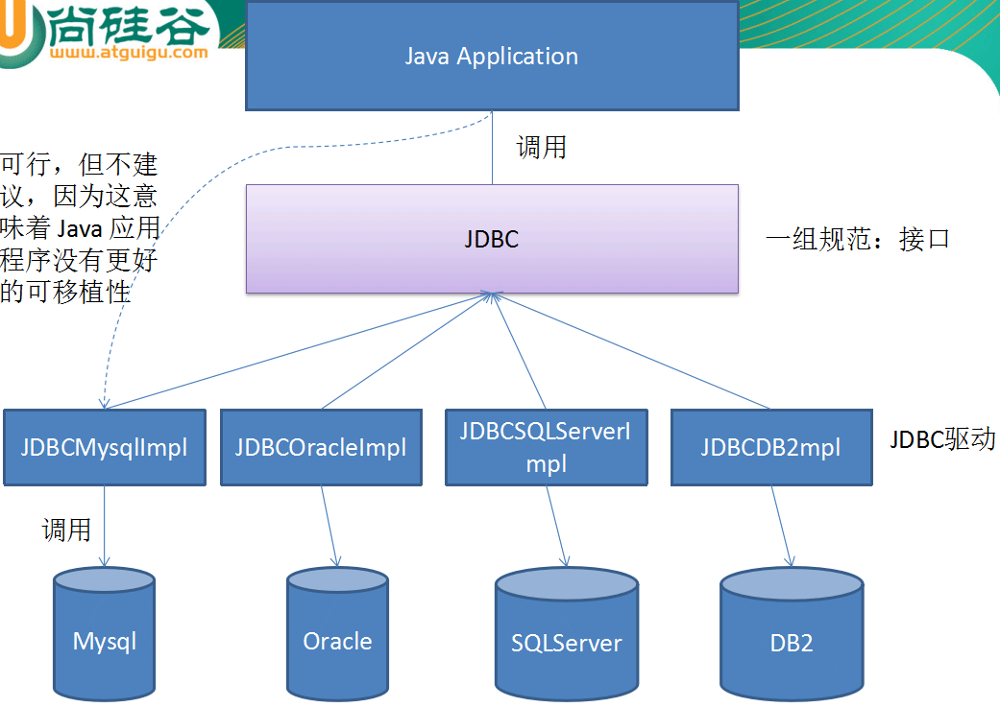
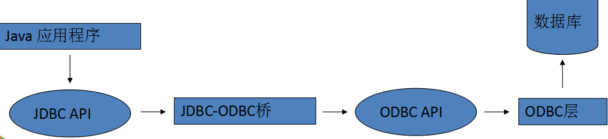
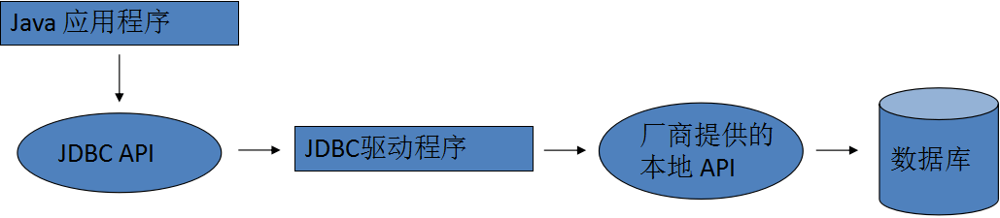
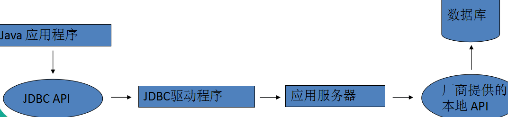
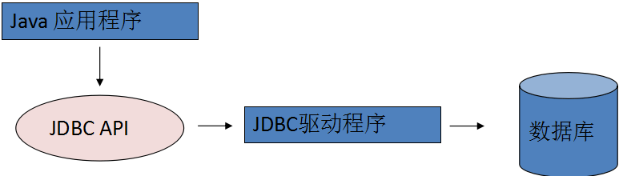
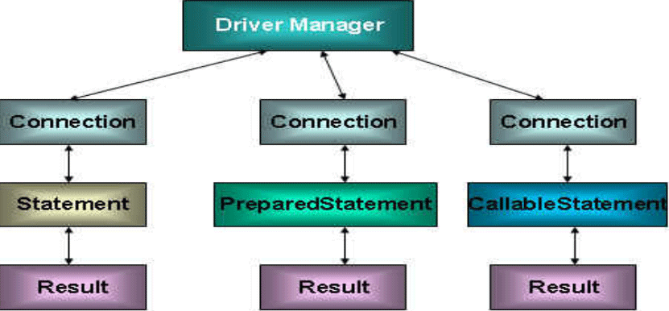
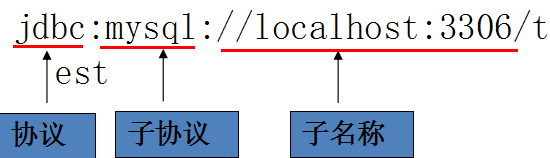

示例地址:https://github.com/lizhongzhen11/jdbcStudy-1
数据持久化
持久化(persistence)：把数据保存到可掉电式存储设备中以供之后使用。大多数情况下，特别是企业级应用，数据持久化意味着将内存中的数据保存到硬盘上加以”固化”，而持久化的实现过程大多通过各种 关系数据库 来完成。
持久化的主要应用是将内存中的数据存储在关系型数据库中，当然也可以存储在磁盘文件、XML数据文件中。
Java 中的数据存储技术
在Java中，数据库存取技术可分为如下几类：
- JDBC直接访问数据库
- JDO技术
- 第三方O/R工具，如Hibernate, ibatis 等
JDBC是java访问数据库的基石，JDO, Hibernate等只是更好的封装了JDBC。
JDBC基础
JDBC(Java Database Connectivity)是一个独立于特定数据库管理系统、通用的SQL数据库存取和操作的公共接口（一组API），定义了用来访问数据库的标准Java类库，使用这个类库可以以一种标准的方法、方便地访问数据库资源
JDBC为访问不同的数据库提供了一种统一的途径，为开发者屏蔽了一些细节问题。
JDBC的目标是使Java程序员使用JDBC可以连接任何提供了JDBC驱动程序的数据库系统，这样就使得程序员无需对特定的数据库系统的特点有过多的了解，从而大大简化和加快了开发过程。

JDBC体系结构
JDBC接口（API）包括两个层次：
面向应用的API：Java API，抽象接口，供应用程序开发人员使用（连接数据库，执行SQL语句，获得结果）。
面向数据库的API：Java Driver API，供开发商开发数据库驱动程序用。
JDBC驱动程序分类
JDBC驱动程序：各个数据库厂商根据JDBC的规范制作的 JDBC 实现类的类库
JDBC驱动程序总共有四种类型：
- 第一类：JDBC-ODBC桥。
- 第二类：部分本地API部分Java的驱动程序。
- 第三类：JDBC网络纯Java驱动程序。
- 第四类：本地协议的纯 Java 驱动程序。
第三、四两类都是纯Java的驱动程序，因此，对于Java开发者来说，它们在性能、可移植性、功能等方面都有优势。
ODBC
早期对数据库的访问，都是调用数据库厂商提供的专有的 API。为了在 Windows 平台下提供统一的访问方式，微软推出了 ODBC(Open Database Connectivity，开放式数据库连接)，并提供了 ODBC API，使用者在程序中只需要调用 ODBC API，由 ODBC 驱动程序将调用转换成为对特定的数据库的调用请求
一个基于ODBC的应用程序对数据库的操作不依赖任何DBMS(database manager system)，不直接与DBMS打交道，所有的数据库操作由对应的DBMS的ODBC驱动程序完成。也就是说，不论是FoxPro、Access , MYSQL还是Oracle数据库，均可用ODBC API进行访问。由此可见，ODBC的最大优点是能以统一的方式处理所有的数据库。
JDBC-ODBC桥
JDBC-ODBC 桥本身也是一个驱动，利用这个驱动，可以使用 JDBC-API 通过ODBC 去访问数据库。这种机制实际上是把标准的 JDBC 调用转换成相应的 ODBC 调用，并通过 ODBC 访问数据库
因为需要通过多层调用，所以利用 JDBC-ODBC 桥访问数据库的效率较低
在 JDK 中，提供了 JDBC-ODBC 桥的实现类(sun.jdbc.odbc.JdbcOdbcDriver)

部分本地API部分Java的驱动程序
这种类型的 JDBC 驱动程序使用 Java 编写，它调用数据库厂商提供的本地 API
通过这种类型的 JDBC 驱动程序访问数据库减少了 ODBC 的调用环节，提高了数据库访问的效率
在这种方式下需要在客户的机器上安装本地 JDBC 驱动程序和特定厂商的本地 API

JDBC网络纯Java驱动程序
这种驱动利用中间件的应用服务器来访问数据库。应用服务器作为一个到多个数据库的网关，客户端通过它可以连接到不同的数据库服务器。
应用服务器通常有自己的网络协议，Java 用户程序通过 JDBC 驱动程序将 JDBC 调用发送给应用服务器，应用服务器使用本地程序驱动访问数据库，从而完成请求。

本地协议的纯 Java 驱动程序
多数数据库厂商已经支持允许客户程序通过网络直接与数据库通信的网络协议。
这种类型的驱动程序完全使用 Java 编写，通过与数据库建立的 Socket 连接，采用具体与厂商的网络协议把 JDBC 调用转换为直接连接的网络调用

JDBC API
JDBC API 是一系列的接口，它使得应用程序能够进行数据库联接，执行SQL语句，并且得到返回结果。

Driver 接口
Java.sql.Driver 接口是所有 JDBC 驱动程序需要实现的接口。
这个接口是提供给数据库厂商使用的，不同数据库厂商提供不同的实现。
在程序中不需要直接去访问实现了 Driver 接口的类，而是由驱动程序管理器类(java.sql.DriverManager)去调用这些Driver实现
加载与注册 JDBC 驱动
加载 JDBC 驱动需调用 Class 类的静态方法 forName(),向其传递要加载的 JDBC 驱动的类名
DriverManager 类是驱动程序管理器类，负责管理驱动程序
通常不用显式调用 DriverManager 类的 registerDriver() 方法来注册驱动程序类的实例,因为 Driver 接口的驱动程序类都包含了静态代码块,在这个静态代码块中,会调用 DriverManager.registerDriver() 方法来注册自身的一个实例
建立连接
可以调用 DriverManager 类的 getConnection() 方法建立到数据库的连接。
JDBC URL 用于标识一个被注册的驱动程序，驱动程序管理器通过这个 URL 选择正确的驱动程序，从而建立到数据库的连接。
JDBC URL的标准由三部分组成，各部分间用冒号分隔。
- jdbc:<子协议>:<子名称>
- 协议：JDBC URL中的协议总是jdbc
- 子协议：子协议用于标识一个数据库驱动程序
- 子名称：一种标识数据库的方法。子名称可以依不同的子协议而变化，用子名称的目的是为了定位数据库提供足够的信息
几种常用数据库的JDBC URL

- 对于 Oracle 数据库连接，采用如下形式：
jdbc:oracle:thin:@localhost:1521:sid
- 对于 SQLServer 数据库连接，采用如下形式：
jdbc:microsoft:sqlserver//localhost:1433; DatabaseName=sid
- 对于 MYSQL 数据库连接，采用如下形式：
jdbc:mysql://localhost:3306/sid
访问数据库
数据库连接被用于向数据库服务器发送命令和 SQL 语句，在连接建立后，需要对数据库进行访问，执行 sql 语句
在 java.sql 包中有 3 个接口分别定义了对数据库的调用的不同方式：
Statement,PrepatedStatemen,CallableStatement
Statement
通过调用 Connection 对象的 createStatement 方法创建该对象
该对象用于执行静态的 SQL 语句，并且返回执行结果
Statement 接口中定义了下列方法用于执行 SQL 语句：
- ResultSet excuteQuery(String sql)
- int excuteUpdate(String sql)
连接数据库示例:
1 2 3 4 5 6 7 8 9 10 11 12 13 14 15 16 17 18 19 20 21
| package com.jdbctest; import java.sql.Connection; import java.sql.Driver; import java.sql.SQLException; import java.util.Properties; import org.junit.Test; public class JDBCTest { @Test public void test() throws SQLException { // 1.创建一个 Driver 实现类的对象 Driver driver = new com.mysql.jdbc.Driver(); // 2.准备连接数据库的基本信息 String url = "jdbc:mysql://localhost:3306/springstudy"; Properties info = new Properties(); info.put("user", "root"); info.put("password", "123456"); // 3.调用 Driver 接口的 connect(url,info) 获取数据库连接 Connection connection = driver.connect(url, info); System.out.println(connection); } }
|
注意！
1.上述代码导入的Driver,Connection是java.sql里面的,不能导错了。
2.info.put()里面是键值对的形式,我一开始忘了给123456加双引号,一直报空指针,后来仔细对照视频,发现视频里的老师加双引号,然后我加上去一试,果然连接成功了。。。
后来,跟着视频敲一个适用于mysql,oracle,sqlserver的方法,又踩坑了,很简单、很基础的坑,我想我要靠自己,然后摸索了两小时,仔细对着视频,眼睛都发算了,才发现db.properties配置文件里面不一样！！！
原来的:
1 2 3 4
| jdbc.user=root jdbc.password=123456 jdbc.driverClass=com.mysql.jdbc.Driver jdbc.jdbcUrl=jdbc:mysql://localhost:3306/springstudy?useUnicode=true&characterEncoding=utf-8&useSSL=false
|
视频上的:
1 2 3 4
| user=root password=123456 driverClass=com.mysql.jdbc.Driver jdbcUrl=jdbc:mysql://localhost:3306/springstudy?useUnicode=true&characterEncoding=utf-8&useSSL=false
|
我想着直接把之前学习spring项目的db.properties文件拿过来,结果没注意配置文件里面的内容不同,后来junit测试时一直报空指针,数据库连接失败,说什么找不到资源,把我弄得团团转！最终经过仔细对比才发现配置文件前面没有jdbc.,心很痛,求抱抱,要美女来抱！
适用各个数据库的方法(记得不同的数据库要导对应的连接包):
1 2 3 4 5 6 7 8 9 10 11 12 13 14 15 16 17 18 19 20 21 22 23
| public Connection getConnection() throws Exception { String jdbcUrl = null; String driverClass = null; String user = null; String password = null; // 读取类路径下的 db.propertis InputStream in = getClass().getClassLoader().getResourceAsStream("db.properties"); Properties properties = new Properties(); properties.load(in); driverClass = properties.getProperty("driverClass"); jdbcUrl = properties.getProperty("jdbcUrl"); user = properties.getProperty("user"); password = properties.getProperty("password"); // 通过反射创建 Driver 对象 Driver driver = (Driver) Class.forName(driverClass).newInstance(); Properties info = new Properties(); info.put("user", user); info.put("password", password); // 通过Driver 的connect方法获取数据库连接 Connection connection = driver.connect(jdbcUrl, info); return connection; }
|
使用DriverManager来写getConnection2()方法:
1 2 3 4 5 6 7 8 9 10 11 12 13 14 15 16 17 18 19 20 21
| public Connection getConnection2() throws Exception { // 1.准备连接数据库 String driverClass = null; String jdbcUrl = null; String user = null; String password = null; // 2.读取类路径下的配置文件,获取 db.properties 对应的输入流 InputStream in = getClass().getClassLoader().getResourceAsStream("db.properties"); // 3.得到配置文件里的各个属性值 Properties properties = new Properties(); // 加载对应的输入流 properties.load(in); driverClass = properties.getProperty("driverClass"); jdbcUrl = properties.getProperty("jdbcUrl"); user = properties.getProperty("user"); password = properties.getProperty("password"); // 4.加载数据库驱动程序 Class.forName(driverClass); // 5.通过 DriverManager 的 getConnection() 方法获取数据库连接 return DriverManager.getConnection(jdbcUrl, user, password); }
|
通过Statement执行更新操作
Statement
通过调用 Connection 对象的 createStatement 方法创建该对象
该对象用于执行静态的 SQL 语句，并且返回执行结果
Statement 接口中定义了下列方法用于执行 SQL 语句：
- ResultSet excuteQuery(String sql)
- int excuteUpdate(String sql)
ResultSet
通过调用 Statement 对象的 excuteQuery() 方法创建该对象
ResultSet 对象以逻辑表格的形式封装了执行数据库操作的结果集，ResultSet 接口由数据库厂商实现
ResultSet 对象维护了一个指向当前数据行的游标，初始的时候，游标在第一行之前，可以通过 ResultSet 对象的 next() 方法移动到下一行
ResultSet 接口的常用方法：
- boolean next()
- getString()
…
1 2 3 4 5 6 7 8 9 10 11 12 13 14 15 16 17 18 19 20 21 22 23 24 25 26 27 28 29 30 31 32 33 34 35 36 37 38 39 40 41 42 43 44 45 46
| /* * 通过 jdbc 向指定数据库插入一条记录 * 1.Statement:用于执行 SQL 语句的对象 * 1).通过 Connection 的 createStatement() 方法来获取 * 2).通过 executeUpdate(sql) 可以执行 SQL 语句 * 3). 传入的 SQL 可以是 insert,update或者delete。但不能是 select * * 2.Connection,Statement 都是应用程序和数据库服务器的连接资源。使用后一定要关闭,需要在 finally 中关闭 Connection 和 Statement 对象 * * 3.关闭顺序是:先关闭Statement后关闭Connection */ @Test public void testStatement() throws Exception { // 1.获取数据库连接 Connection connection = null; Statement statement = null; try { connection = getConnection2(); // 2.准备插入的 SQL 语句 String sql = "insert into jdbc1 (id, name, date, email) values(1, '李中贞', '1993-06-02', '295630519@qq.com')"; // 3.执行插入 // 1).获取操作 SQL 语句的 Statement 对象 // 调用 Connection 的 createStatement() 方法来获取 statement = connection.createStatement(); // 2).调用 Statement 对象的 executeUpdate(sql) 执行 SQL 语句进行插入 statement.executeUpdate(sql); } catch (Exception e) { // TODO Auto-generated catch block e.printStackTrace(); } finally { try { if(statement != null) { // 4.关闭Statement statement.close(); } } catch (Exception e) { // TODO Auto-generated catch block e.printStackTrace(); } finally { if(connection != null) { // 5.关闭数据库连接 connection.close(); } } } }
|
通用的关闭数据库连接以及关闭 ResultSet 和 Statement方法
1 2 3 4 5 6 7 8 9 10 11 12 13 14 15 16 17 18 19 20 21 22 23 24 25 26
| public void release(ResultSet resultSet, Statement statement, Connection connection) { if(resultSet != null) { try { resultSet.close(); } catch (Exception e) { // TODO: handle exception e.printStackTrace(); } } if(statement != null) { try { statement.close(); } catch (Exception e) { // TODO: handle exception e.printStackTrace(); } } if(connection != null) { try { connection.close(); } catch (Exception e) { // TODO: handle exception e.printStackTrace(); } } }
|
优化后的方法
1 2 3 4 5 6 7 8 9 10 11 12 13 14 15 16 17 18 19 20 21 22 23 24 25 26 27 28
| @Test public void testOptimize() throws Exception { // 1.初始化 Connection connection = null; Statement statement = null; ResultSet resultSet = null; try { // 2.获取数据库连接 connection = getConnection2(); statement = connection.createStatement(); // 3.写sql String sql = "select * from jdbc1"; // 4.发送 sql 语句:调用 Statement 对象的 executeQuery(sql) 方法 // 得到结果集对象 ResultSet resultSet = statement.executeQuery(sql); // 5.处理结果集: // 5.1 调用 ResultSet 的 next() 方法: 查看结果集的下一条记录是否有效 while(resultSet.next()) { int id = resultSet.getInt(1); System.out.println(id); } } catch (Exception e) { // TODO Auto-generated catch block e.printStackTrace(); } finally { release(resultSet, statement, connection); } }
|
JDBC API 小结1
java.sql.DriverManager用来装载驱动程序，获取数据库连接。
java.sql.Connection完成对某一指定数据库的联接
java.sql.Statement在一个给定的连接中作为SQL执行声明的容器，他包含了两个重要的子类型。
- Java.sql.PreparedSatement 用于执行预编译的sql声明
- Java.sql.CallableStatement用于执行数据库中存储过程的调用
java.sql.ResultSet对于给定声明取得结果的途径